Residential Interior

Location
Year
Scope
Located in Shiraz, House no.20 was designed as a contemporary residence centered around social living and the experience of gathering. Conceived for homeowners who frequently entertain family and friends, the project places the kitchen at the heart of the home, transforming it from a functional workspace into the primary social hub of everyday life. The spatial organization follows an open-plan layout that encourages visual continuity and effortless movement between the kitchen, dining, and living areas. Large interconnected spaces create a sense of openness while allowing different activities to unfold simultaneously, making the house equally suited to intimate family moments and larger social occasions. A defining feature of the project is its bespoke kitchen, designed as both a functional workspace and an architectural centerpiece. Carefully detailed cabinetry, integrated appliances, natural stone surfaces, and warm timber elements combine to create a refined yet highly practical environment where cooking becomes part of the social experience rather than being separated from it. The interior is defined by a restrained palette of natural materials, soft neutral tones, and carefully balanced lighting that enhances the textures of each surface while creating a calm and sophisticated atmosphere. Bespoke furniture and custom joinery reinforce the architectural language, resulting in spaces that feel cohesive, timeless, and deeply connected to the lifestyle of their occupants. House no.20 demonstrates how thoughtful planning, carefully crafted details, and a clear understanding of contemporary living can create a home where architecture supports both everyday comfort and meaningful social interaction.
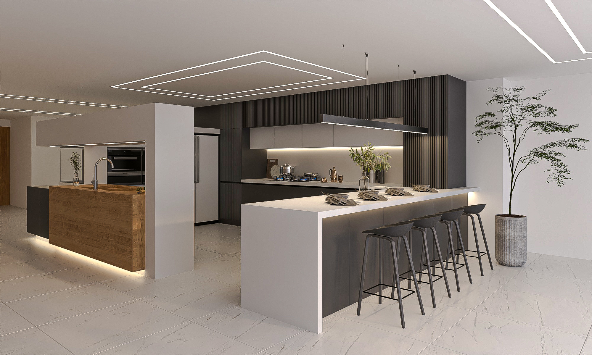
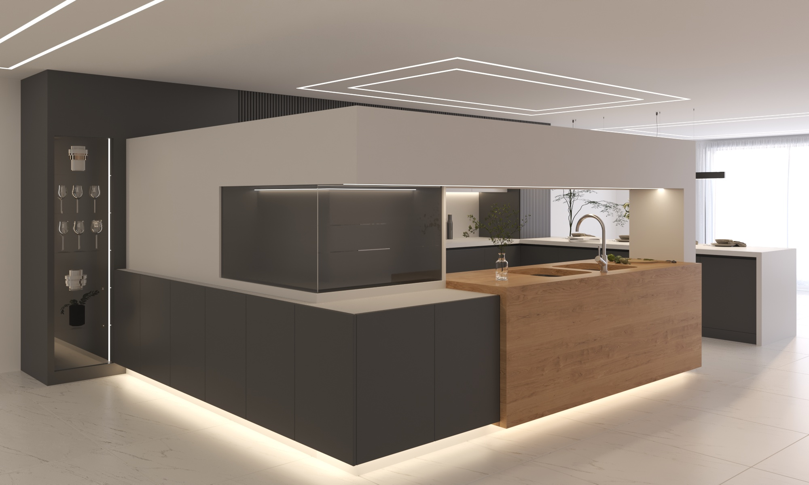
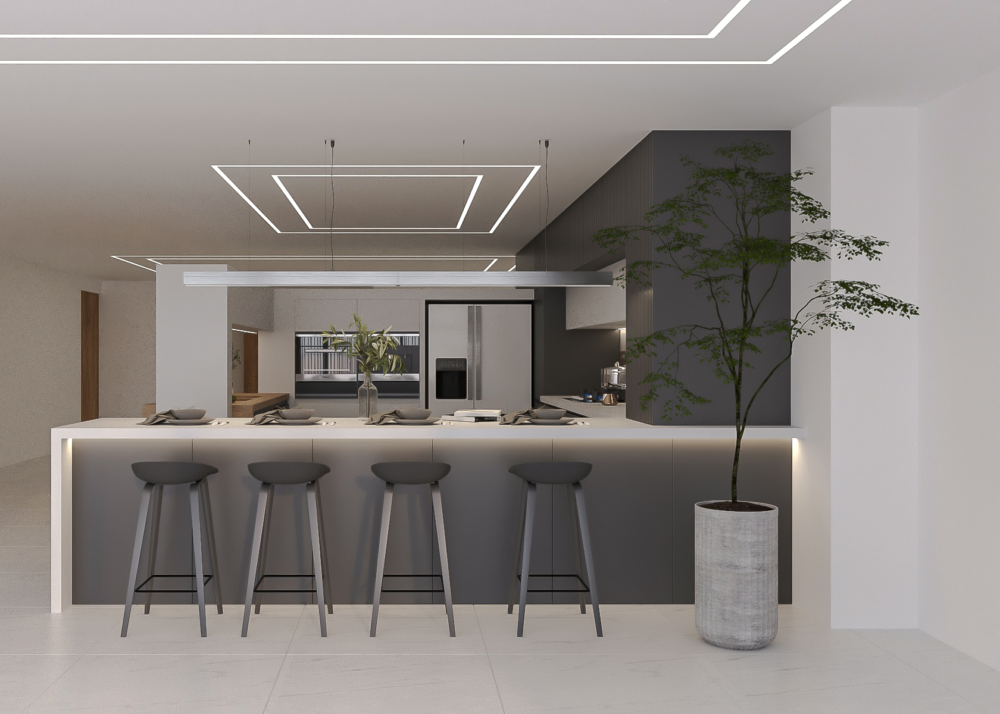
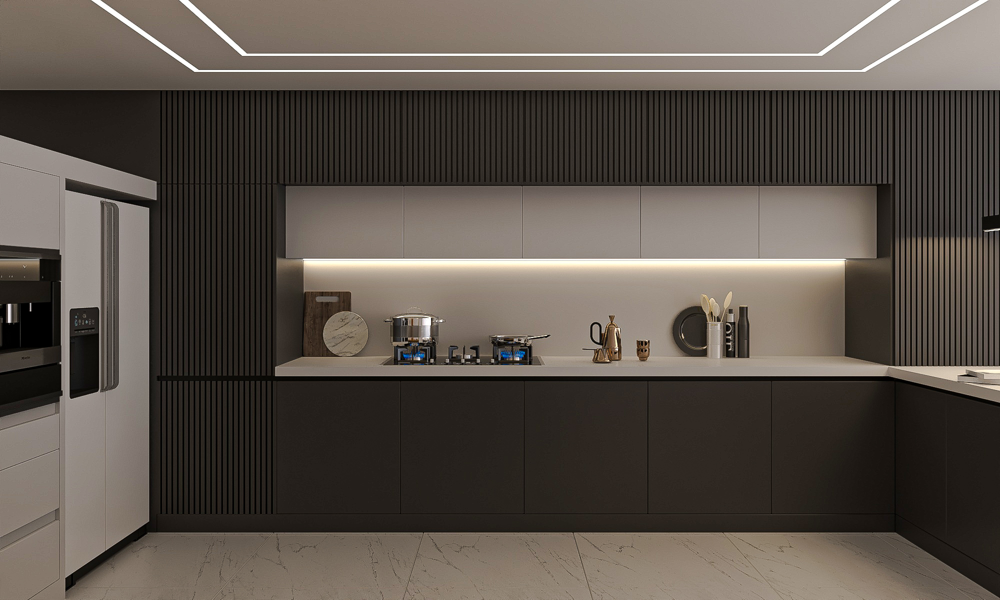
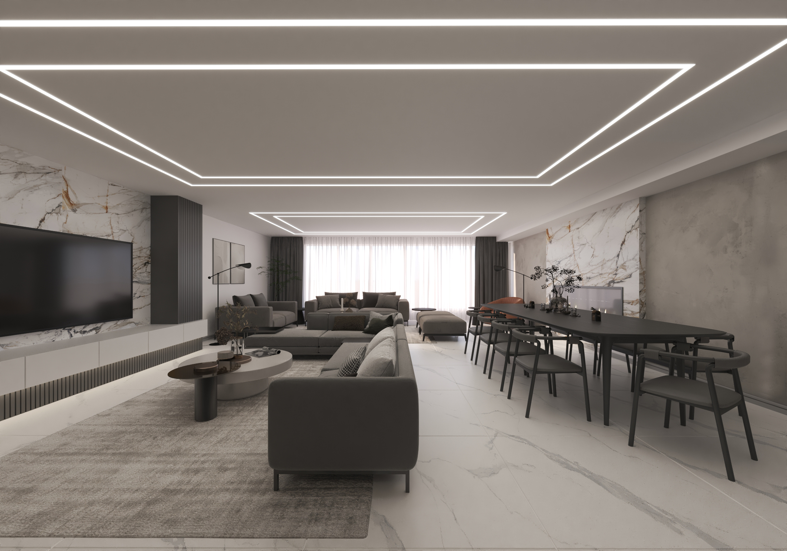
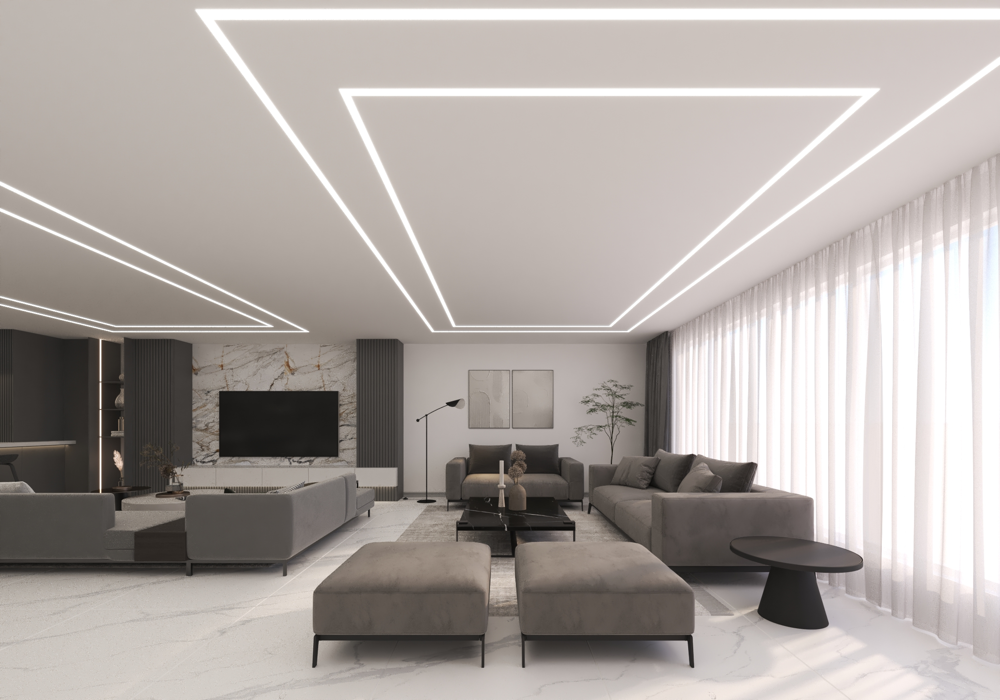
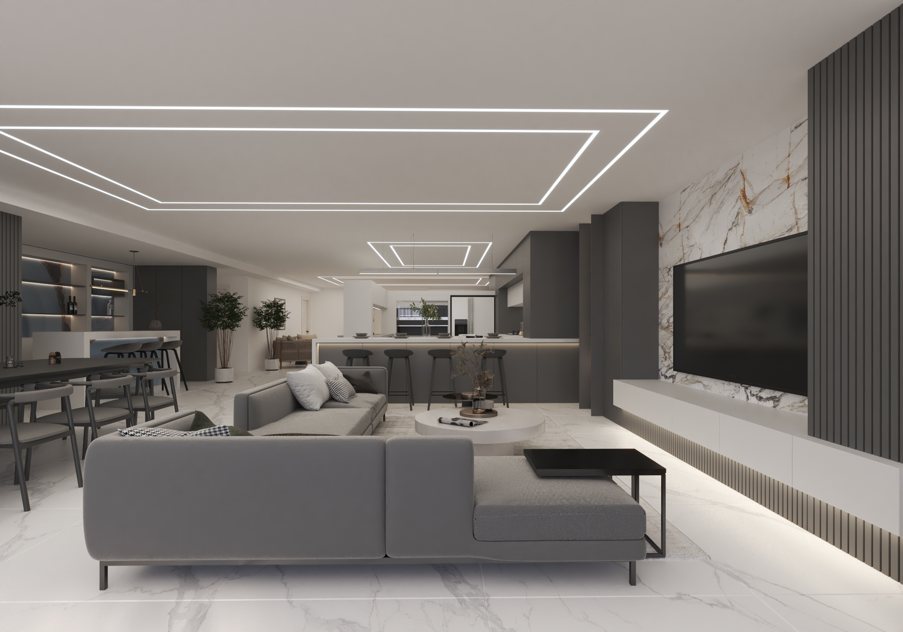
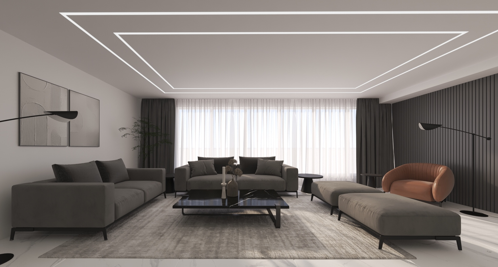
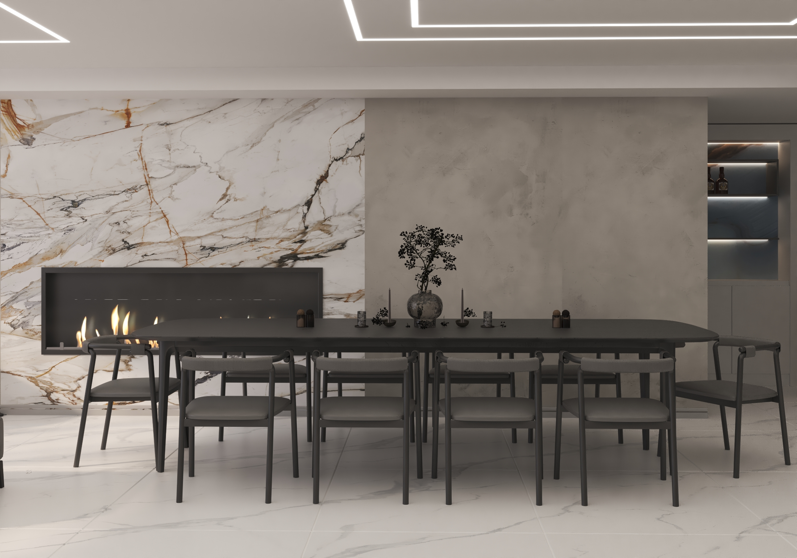
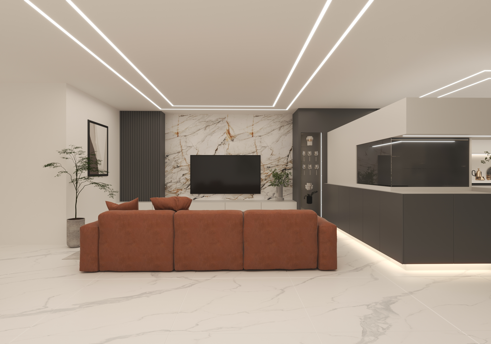
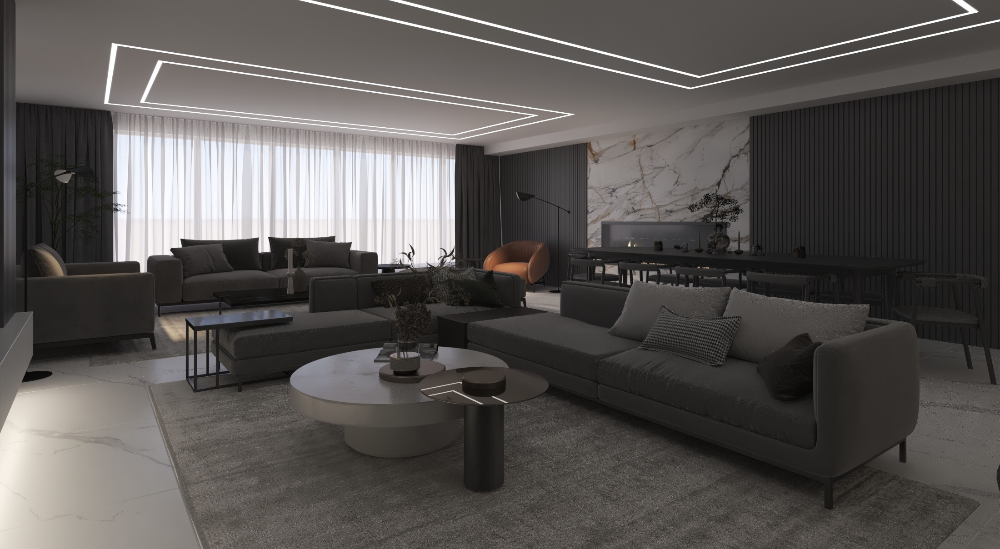
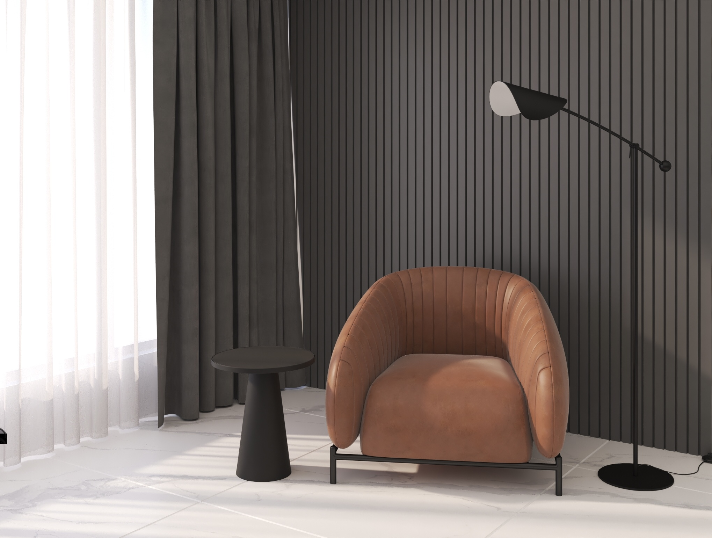